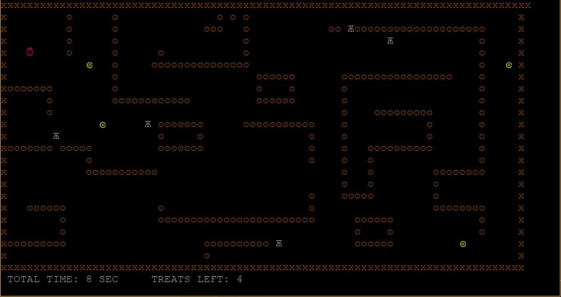
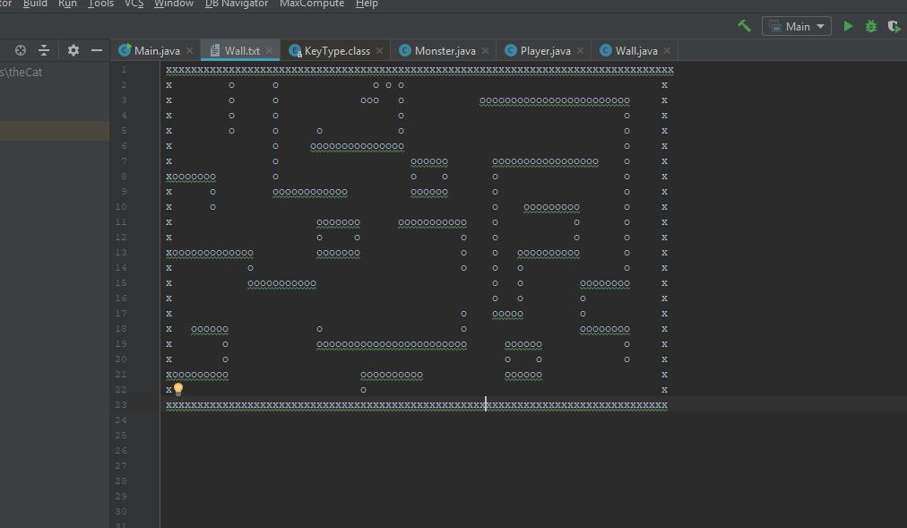

Lanterna game
Description
This group project was an exercise in writing code in Java. It is a mini-game, where the player has to navigate through a maze, avoid enemy contact and pick up all coins to win the game.
If the player comes too close to an enemy, it will try to intercept the player. Time-scores are saved in a textfile, so the highscore can be tracked over time. We used Lanterna which is a Java library that allows the user to write semi-graphical user interfaces
Methods used
- Lanterna Java library
- Java
UI/UX
Lanterna is used to create text-based terminal GUIs and is quite limited concerning the graphics. That is also why the game is completely made with unicode characters. It has a retro feeling about it, reminding a bit of early games like pac-man
Functions

When the game starts, a timer also starts counting. For every move the player makes the enemies also move in a random direction. Only if the player comes to close, the enemy starts chasing the player. If the enemy touches the player the game is lost. To reveal the finish-flag the player needs to collect all the coins in the maze. Once the player reaches the flag the game is won and the time is added to the highscore board
Level-design
The level design is created in a simple .txt file and can easily be copied and modified to add new levels in the future